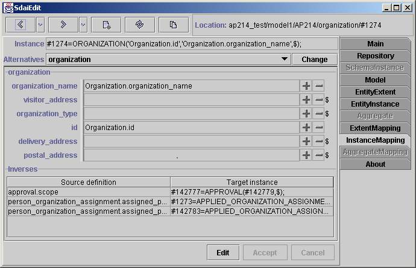

Instance Mapping page

This page shows attributes and other
data for one AIM instance in the ARM concept.
Representation of the AIM instance in the physical file format is shown
first. An alternative
view of this instance is below. The current view shows one of the
alternatives. If you
want to change the current alternative, you must choose it from the
combo box
and press the 'Change' button.
Attributes
All attributes grouped by ARM entity
data types are
listed below. The order of the ARM
entity data types is the same as inheritance - from the top to the
bottom. For
the complex entity data types and multiple inheritance it is more
complicated. The order of attributes is the same as listed originally
in the EXPRESS file. There are four fields in one line for every
instance. The first one is the name of an attribute,
no operations are available for this field. The second one is the type
of an attribute.
It is teken form the EXPRESS definition. You can click on this type
filed to
see the detaisl of it. The third field is an attribute value with plus
and minus
buttons for operations. If an attribute is mapped in several different
ways then
all these alternative attributes are listed in the following combo box.
You will
see values of these alternatives by changing the selected alternative.
The first and the second fields are
separated with a split, so you can enlarge the field for an attribute
value view. You can take the entity instance from the SDAI clipboard
and set it as the value for an attribute using plus button or unset it
with minus button. The fourth field is used to show if an attribute
set. If the '$' mark is present then the attribute is not set and when
the '$' is absent,
the attribute is set even if no value appears (e.g. set with an empty
string).
Inverses
All instances (ARM type and AIM
instance pair) which
reference the displayed instance are listed in this table. The first
column - 'Source definition', shows which ARM entity instance and its
attribute refers this instance and the second - 'Target
instance', is AIM instance. If you are working on the schema instance
domain then
all inverses from this domain will be listed here.
Button line
With 'Edit' button you can switch to
edit mode, then you will be able to edit
attributes. 'Accept' and 'Cancel' will accept or cancel your changes.
When
you are in the edit mode you are not able to go to other pages
before
accepting or cancelling recent changes.